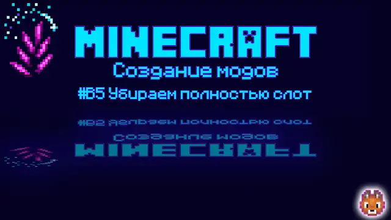

Java - FULL STACK сборник статей в формате Obsidian
Obsidian — приложение, где заметки связаны ссылками в единую сеть. Не папка с файлами, а карта: от одной темы тянется нить к другой. Открываешь Java — видишь, как она цепляется за паттерны, а паттерны — за практику.

Урок Boosty - как убрать слот в Minecraft 1.20.1 Forge
Уберём слот полностью! На самом деле мы слот убрали, давайте завершим эту тему, что слот полностью исчезнет. В этом уроке мы узнаем, как до сделать, чтобы слот исчез. 1.20.1 Forge